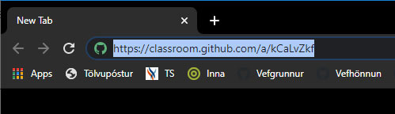

- Verkefnalýsingar eru í Innu/Áfangi/Verkefni
- Í fyrstu verklýsingu áfangans er þátttökubeiðni (Classroom invitation)
- Þátttökubeiðnin er vefslóð (url) í Athugasemdir kennara í Innu. (Ekki nota urlið í myndinni)
- Afritaðu þáttökubeiðnina í vafra (browser)
 - Eftir að hafa ýtt á “Enter” fer af stað ferli á Github miðlinum sem býr til áfangageymsluna þína (Classroom repository)

- Strax eftir að hafa opnað áfangageymsluna skilar þú tengli (link) í INNU - verkefni 1 - vefslóð (URL) sem vísar á geymsluna þína.
- Kennari hefur fullan aðgang að geymslunni og getur aðstoðað þig beint í kóðanum ef þörf er á því.
- Einkunn er gefin fyrir verkefnin í Innu að loknum skilafresti sem er tiltekinn í þar.
-
Verkefnum er ekki skilað í Innu en nemendur eiga að lesa vel verkefnalýsingarnar sem eru þar.
- Skjáfyrirlestur: Áfangageymsla stofnuð